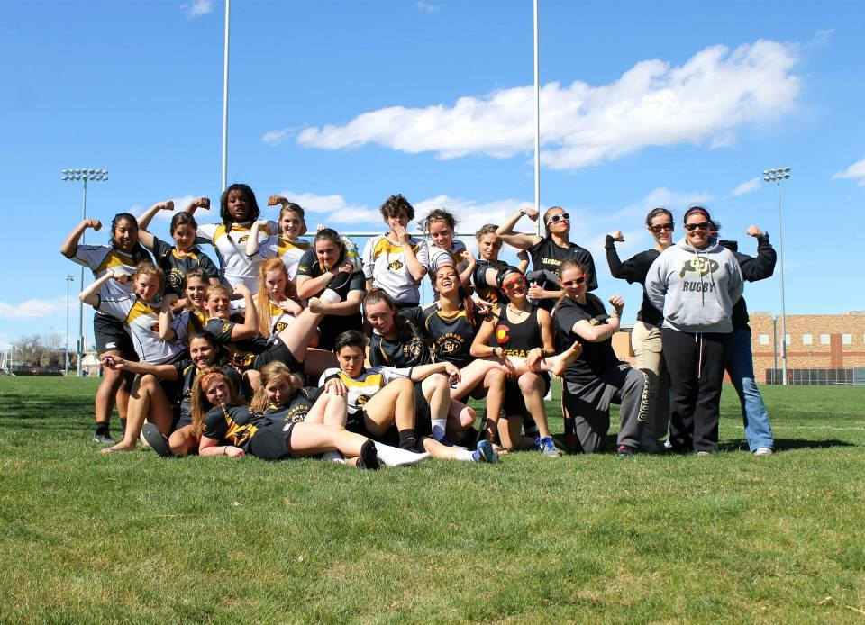
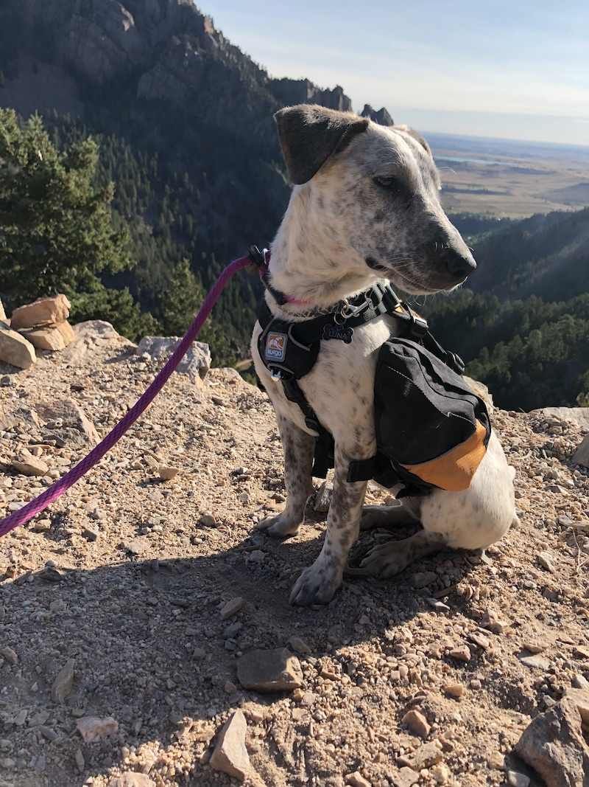

About Me
Hey there, I'm Taylor Hershberger. I speclialize in web development, web design, UX/UI design, SEO, and tech support.
My college journey unfolded at the University of Colorado in Boulder, where I received a degree from the College of Engineering and Applied Sciences in Creative Technology and Design. During my time there, I focused on the world of interactivity – UX Design, Web Development, App Coding, Game Design, Universal Design, and even Programming Microcontrollers. It was a tech playground where I soaked up tons of knowledge and hands-on experience, all while playing on the CU Women’s Rugby Team for four action-packed years.
After I graduated, I found my first full time job at Brighter Vision Web Solutions, a start-up making waves by crafting websites for mental health professionals. I started as a Technical Support Specialist where I mostly helped clients with SEO and making edits to their WordPress websites but the fast past and scrappy environment of a start up company allowed me quickly grow and find new opportunities for our company to improve.
I soon became a Senior Support Specialist and began to take on more responsibilities including managing partner relationships and the SEO written for all of our websites. I innovated a solution that made SEO writing more efficient, reducing 50-80% of the time it took to complete each website. We experienced a lot of growth, and just around my two-year mark, we were acquired by Evercommerce, a Denver-based software powerhouse.
Client demands soared, leading us to create a second support team tuned in to tackle high-level technical issues – website bugs, email issues, and those moments when clients needed some extra TLC. That's when I embraced the role of Technical Support Team Lead, captaining the T2 Support Team. Back in the day when I first started, our website count barely topped 3,000, and, after nearly six years of hustle, we were boasting over 6,500!
I recently parted ways with Brighter Vision to take time to pursue a new career path. As much as I loved working there, I felt it was time to sharpen my coding skills and take the next step in my career.
When I'm not immersed in tech, I'm hanging out with my Australian Cattle Dog mix, Luna. You'll catch me hitting the trails, nurturing my plants, grooving at festivals, going for jogs, creating pottery, making candles, and conquering the world of board and video games.
Below you can check out the certificates I’ve earned.